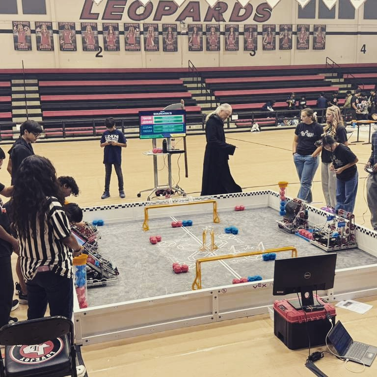

Highlights & Team Information
Our team captain, Arnav, started assembling a team for VEX, however he realized that all of the experienced people were committed to other teams and could not work in our team. So he had to turn to the new sophomores who had no experience in VEX. Most people in our team have barely any true experience in VEX robotics. This caused a lot of the team to rely on our team captain, Arnav. However Arnav was one of the most patient and loving people we know, because of this we overcame every obstacle and problem to create a hard working, focused, and creative team of engineers full of passion and energy.
He worked hard to figure out the people that would suit better for the team; he never took any decision on his own but rather preferred to ask us and take a vote on what sounded good to him. For example, when he was selecting the people for our team, he consulted with all of the already inn members about they guy he was thinking to take in the team.
If everyone agreed or there were majority votes, then the guy got into the team otherwise Arnav generally apologized the guy to whom he was talking to and explains him the situation. During the time in VEX, Arnav had some tough times wherein he just got to trust his teammates. He consulted with everybody about the guy he trusted the most and made him the team captain (Vedant) for temporary purposes and in the long run, he made him the team’s vice
In the first meeting, we checked our kit and all the parts we had available to us. This was an unofficial inventory to check what parts we already had, and add a little organization to the our kit which looked like a tornado hit it. During this unofficial inventory we found many pats that were functional but even more that were junk.
Leave a comment